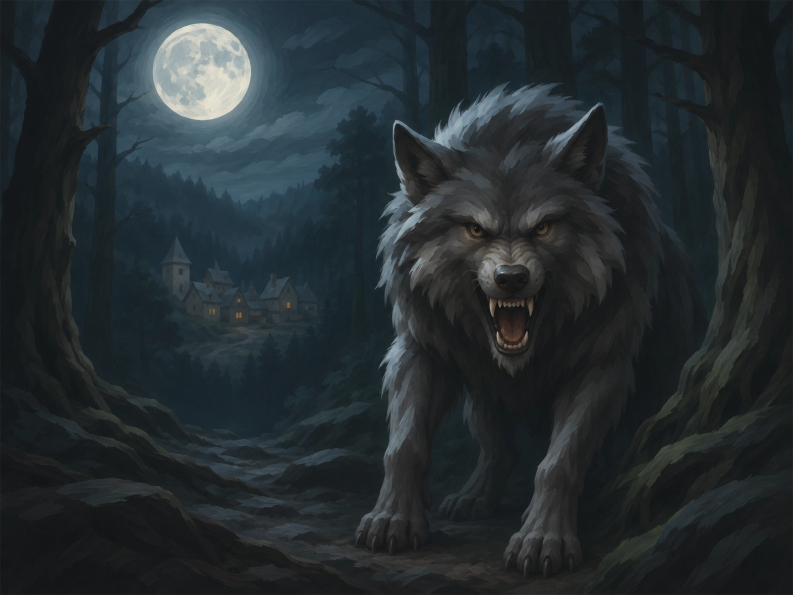
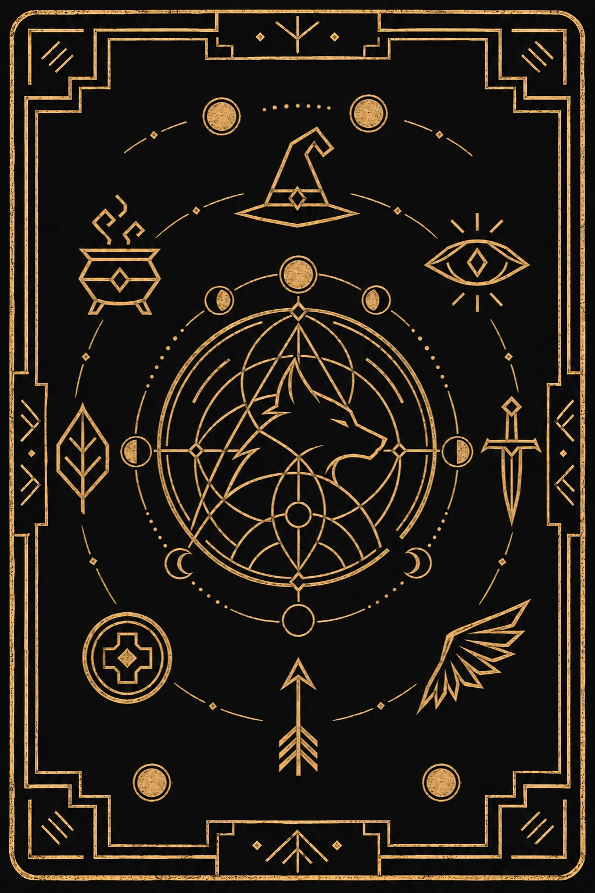

ยินดีต้อนรับเข้าสู่ Game Werewolf
เลือกรูปแบบการดำเนินเกม Werewolf ที่คุณต้องการ
สแกนมือถือ สุ่มการ์ดอัตโนมัติ ไม่ต้องเลือก Dropdown
💡 เลือกบทบาทให้คะแนนดัชนีใกล้เคียง 0 เพื่อความสมดุลสูงสุด
เลือกบทบาทในเกม (Role Selection)
1 Role = ผู้เล่น 1 คนให้ผู้เล่นสแกน QR Code ด้วยกล้องมือถือ
รายชื่อผู้เล่นที่เข้าร่วมแล้ว
กรอกชื่อของคุณเพื่อรับไพ่
ชื่อนี้จะปรากฏบนจอของ Game Master และเพื่อนร่วมห้อง

รอสมาชิกให้ครบทีม...
Seer
ผู้หยั่งรู้
ตื่นขึ้นมาในตอนกลางคืนเพื่อตรวจสอบบทบาทของผู้เล่น 1 คนว่าเป็นหมาป่าหรือไม่
รักษาบทบาทของคุณเป็นความลับจนกว่าเกมจะจบ
ขั้นตอนที่ 1: เลือกบทบาทในเกม
เลือก Role ที่ต้องการใช้ในรอบนี้
ขั้นตอนที่ 2: กรอกชื่อผู้เล่น
(0 คน)พิมพ์ชื่อผู้เล่นแต่ละคน (หากเว้นว่างไว้ ระบบจะตั้งชื่อ "ผู้เล่น 1, 2, ..." ให้อัตโนมัติ)
ขั้นตอนที่ 3: จับคู่ผู้เล่นกับบทบาท
กำหนดว่าใครได้รับบทบาทไหน
ช่วงเวลากลางคืน (Night Phase)
⏱️ ตัวจับเวลาอภิปราย / โหวต
00:00ลำดับการทำงานตอนกลางคืน
สถานะผู้เล่นทั้งหมด
คลิกปุ่มเพื่อเปลี่ยนสถานะ รอด/ตายMad Bomber ถูกสังหาร!
เลือกระบุตัวผู้เล่นที่นั่งทางซ้ายและขวา เพื่อให้ระเบิดทำงานสังหารพวกเขา (เลือก "ไม่มี" หากไม่มีคนนั่งฝั่งนั้น)
🧳 เลือกบทบาท Traveler
ให้ Modulator เลือกบทบาทและฝ่าย (ดี/ร้าย) ให้กับผู้เล่นที่เพิ่งเข้าร่วมกลางเกม